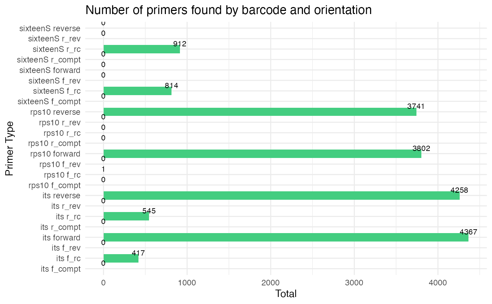

Assign taxonomy functions
Usage
assign_tax(
analysis_setup,
asv_abund_matrix,
tryRC = FALSE,
verbose = FALSE,
multithread = FALSE,
retrieve_files = FALSE,
overwrite_existing = FALSE,
db_rps10 = "oomycetedb.fasta",
db_its = "fungidb.fasta",
db_16S = "bacteriadb.fasta",
db_other1 = "otherdb1.fasta",
db_other2 = "otherdb2.fasta"
)Arguments
- analysis_setup
An object containing directory paths and data tables, produced by the
prepare_readsfunction- asv_abund_matrix
ASV abundance matrix.
- tryRC
Whether to try reverse complementing sequences during taxonomic assignment
- verbose
Logical, indicating whether to display verbose output
- multithread
Logical, indicating whether to use multithreading
- retrieve_files
Specify TRUE/FALSE whether to copy files from the temp directory to the output directory
- overwrite_existing
Logical, indicating whether to remove or overwrite existing files and directories from previous runs. Default is
FALSE.- db_rps10
The reference database for the rps10 locus
- db_its
The reference database for the ITS locus
- db_16S
The reference database for the 16S locus
- db_other1
The reference database for different locus 1 (assumes format is like SILVA DB entries)
- db_other2
The reference database for a different locus 2 (assumes format is like SILVA DB entries)
Examples
# Assign taxonomies to ASVs on a per barcode basis
analysis_setup <- prepare_reads(
data_directory = system.file("extdata", package = "demulticoder"),
output_directory = tempdir(),
tempdir_path = tempdir(),
tempdir_id = "demulticoder_run_temp",
overwrite_existing = TRUE
)
#> Rows: 2 Columns: 23
#> ── Column specification ────────────────────────────────────────────────────────
#> Delimiter: ","
#> chr (3): primer_name, forward, reverse
#> dbl (16): minCutadaptlength, maxN, maxEE_forward, maxEE_reverse, truncLen_fo...
#> lgl (4): already_trimmed, count_all_samples, multithread, verbose
#>
#> ℹ Use `spec()` to retrieve the full column specification for this data.
#> ℹ Specify the column types or set `show_col_types = FALSE` to quiet this message.
#> Rows: 2 Columns: 23
#> ── Column specification ────────────────────────────────────────────────────────
#> Delimiter: ","
#> chr (3): primer_name, forward, reverse
#> dbl (16): minCutadaptlength, maxN, maxEE_forward, maxEE_reverse, truncLen_fo...
#> lgl (4): already_trimmed, count_all_samples, multithread, verbose
#>
#> ℹ Use `spec()` to retrieve the full column specification for this data.
#> ℹ Specify the column types or set `show_col_types = FALSE` to quiet this message.
#> Rows: 4 Columns: 3
#> ── Column specification ────────────────────────────────────────────────────────
#> Delimiter: ","
#> chr (3): sample_name, primer_name, organism
#>
#> ℹ Use `spec()` to retrieve the full column specification for this data.
#> ℹ Specify the column types or set `show_col_types = FALSE` to quiet this message.
#> Creating output directory: /var/folders/59/9jp4sjjd00n2wp4kgqtvq7dh0000gn/T//RtmpV30CbD/demulticoder_run_temp/prefiltered_sequences

cut_trim(
analysis_setup,
cutadapt_path="/usr/bin/cutadapt",
overwrite_existing = TRUE
)
#> Error in system2(cutadapt, args = "--version", stdout = TRUE, stderr = TRUE): error in running command
make_asv_abund_matrix(
analysis_setup,
overwrite_existing = TRUE
)
#> Error in 1:i: argument of length 0
assign_tax(
analysis_setup,
asv_abund_matrix,
retrieve_files=FALSE,
overwrite_existing = TRUE
)
#> Warning: cannot open compressed file '/var/folders/59/9jp4sjjd00n2wp4kgqtvq7dh0000gn/T//RtmpV30CbD/demulticoder_run_temp/asvabund_matrixDADA2_its.RData', probable reason 'No such file or directory'
#> Error in readChar(con, 5L, useBytes = TRUE): cannot open the connection